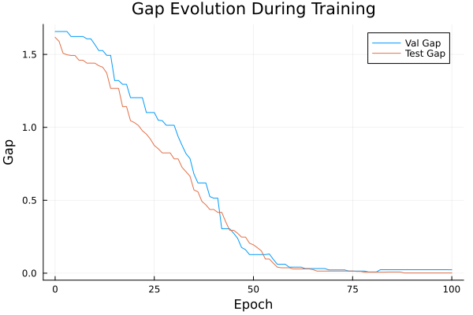
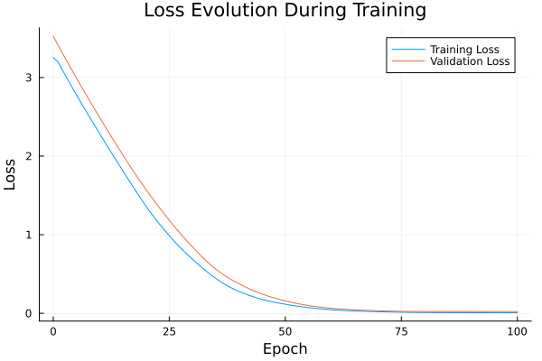

Basic Tutorial: Training with FYL on Argmax Benchmark
This tutorial demonstrates the basic workflow for training a policy using the Perturbed Fenchel-Young Loss algorithm.
Setup
using DecisionFocusedLearningAlgorithms
using DecisionFocusedLearningBenchmarks
using MLUtils: splitobs
using PlotsCreate Benchmark and Data
b = ArgmaxBenchmark()
dataset = generate_dataset(b, 100)
train_data, val_data, test_data = splitobs(dataset; at=(0.3, 0.3, 0.4))(DecisionFocusedLearningBenchmarks.Utils.DataSample{@NamedTuple{}, @NamedTuple{}, Matrix{Float32}, Vector{Float32}, Vector{Float32}}[DataSample(x=Float32[0.974777 0.655634 … 0.812478 -1.71164; 0.322862 0.836889 … -0.145408 0.255807; … ; -1.26335 -1.48278 … -0.341282 0.812967; 0.740261 0.440551 … -1.37232 -0.681233], θ=Float32[-1.19385, -0.839837, 0.820204, 1.88103, 1.76917, -1.62921, 0.168566, -0.685044, 0.768863, 0.733483], y=Float32[0.0, 0.0, 0.0, 1.0, 0.0, 0.0, 0.0, 0.0, 0.0, 0.0]), DataSample(x=Float32[-0.559677 0.62998 … 1.67763 -0.751208; 2.35022 -0.179425 … 0.0591393 -0.239157; … ; -0.044508 -0.809271 … -0.539542 0.718458; 0.521837 -0.49833 … 0.392151 0.612557], θ=Float32[-1.46985, 0.665637, -1.26361, 0.584156, -0.739745, -1.18518, 1.51329, 0.74449, 0.144552, 0.165355], y=Float32[0.0, 0.0, 0.0, 0.0, 0.0, 0.0, 1.0, 0.0, 0.0, 0.0]), DataSample(x=Float32[-2.68452 1.22189 … -0.635195 0.836335; 0.413653 -0.0309577 … -0.224834 1.50343; … ; -1.20406 -0.255811 … 0.4304 0.286992; -1.9426 -0.229607 … -1.75287 1.53458], θ=Float32[-2.93449, 0.891024, 0.468102, 0.445998, 0.692515, -0.293912, -0.256109, -2.71227, 0.356221, -0.355387], y=Float32[0.0, 1.0, 0.0, 0.0, 0.0, 0.0, 0.0, 0.0, 0.0, 0.0]), DataSample(x=Float32[-0.06484 -0.859656 … 1.07068 0.279217; -0.0342643 -0.0476014 … -0.621586 0.107819; … ; 1.00877 -0.404503 … 1.14579 0.399961; -0.423147 -0.783363 … -1.88038 0.793756], θ=Float32[0.664533, -0.857133, -2.71127, -0.045601, -0.707975, -1.36135, 1.41174, 0.375198, 2.42515, 1.11454], y=Float32[0.0, 0.0, 0.0, 0.0, 0.0, 0.0, 0.0, 0.0, 1.0, 0.0]), DataSample(x=Float32[-1.49803 1.84494 … 0.287467 0.47315; 0.775185 -0.797083 … -0.457659 1.97625; … ; -0.458498 -0.16788 … 0.86916 -0.514214; -0.695454 0.856507 … -0.687861 0.924704], θ=Float32[-1.21971, 1.06819, 0.553794, 4.08477, -1.37984, 0.232709, -1.33361, 1.20038, 2.39597, -0.0746116], y=Float32[0.0, 0.0, 0.0, 1.0, 0.0, 0.0, 0.0, 0.0, 0.0, 0.0]), DataSample(x=Float32[-1.1884 0.530987 … -0.710095 0.0131626; 1.20304 -0.570949 … -0.16933 0.206397; … ; -2.88935 -0.525094 … 1.99021 -0.0577895; -0.467547 1.38919 … 0.0497068 0.275302], θ=Float32[-4.11827, -0.0522364, -1.19283, -0.868961, 0.173707, 1.6346, 1.77612, -2.39599, 0.990341, 0.425866], y=Float32[0.0, 0.0, 0.0, 0.0, 0.0, 0.0, 1.0, 0.0, 0.0, 0.0]), DataSample(x=Float32[-1.25712 0.17613 … -0.928358 -0.140773; 0.442179 1.30549 … 0.739073 -0.844355; … ; 0.0493898 0.241882 … 1.3999 -2.00938; -0.943099 0.0836247 … -2.15161 0.288589], θ=Float32[-0.391576, -0.678869, -1.89687, 1.28611, -2.11169, -1.44402, 2.22863, 0.0910308, 0.641945, -1.39193], y=Float32[0.0, 0.0, 0.0, 0.0, 0.0, 0.0, 1.0, 0.0, 0.0, 0.0]), DataSample(x=Float32[-0.415113 -1.89033 … -0.909527 -0.992099; -1.27203 0.239076 … 1.26155 -0.015088; … ; -0.808209 1.46711 … 1.3936 1.21204; -2.05267 0.841699 … 0.117348 0.17365], θ=Float32[1.21488, -0.614379, 1.174, -0.130793, -1.70266, 0.218062, 0.626256, -0.630094, 0.884247, 0.0378936], y=Float32[1.0, 0.0, 0.0, 0.0, 0.0, 0.0, 0.0, 0.0, 0.0, 0.0]), DataSample(x=Float32[1.58865 1.82263 … -0.420985 -0.673599; 1.18327 -0.634179 … -0.690598 -0.897017; … ; 1.292 1.81761 … 0.614606 0.382416; 0.531486 -1.08728 … 0.126209 -0.491128], θ=Float32[1.64197, 4.31627, 0.149068, 0.458136, -0.70242, -1.97804, 0.366344, 2.51891, -0.00130983, 0.709075], y=Float32[0.0, 1.0, 0.0, 0.0, 0.0, 0.0, 0.0, 0.0, 0.0, 0.0]), DataSample(x=Float32[-1.17123 0.815491 … 0.314033 -0.62105; 0.174869 0.333152 … -0.975321 0.198268; … ; 0.762019 0.11072 … 1.0213 0.891672; 0.107737 1.74178 … 0.104701 0.0248773], θ=Float32[0.0148345, 0.222821, -1.28189, -0.147999, 0.935044, -0.604227, 0.0569067, 0.642004, 1.60709, -0.190787], y=Float32[0.0, 0.0, 0.0, 0.0, 0.0, 0.0, 0.0, 0.0, 1.0, 0.0]) … DataSample(x=Float32[0.995053 -1.463 … -0.167019 -2.1957; 0.42272 1.62997 … 0.342731 0.493954; … ; -1.95311 0.624528 … -0.561165 -0.0283293; -0.299178 1.19902 … -1.13799 0.432795], θ=Float32[-0.601887, -1.84207, 0.247282, 0.755806, 0.601131, 0.885282, -0.522643, 1.77913, 0.619702, -1.91932], y=Float32[0.0, 0.0, 0.0, 0.0, 0.0, 0.0, 0.0, 1.0, 0.0, 0.0]), DataSample(x=Float32[0.798975 -0.466122 … 2.05021 -1.08431; -0.34385 -0.619665 … -0.879973 -0.191291; … ; 0.222449 -0.457579 … 1.57332 0.604817; -1.46214 -0.109873 … 0.539955 -0.194296], θ=Float32[1.24868, 0.0188508, -0.188323, 1.99339, 1.06565, 1.80628, 0.915127, -2.98228, 2.78399, -0.670387], y=Float32[0.0, 0.0, 0.0, 0.0, 0.0, 0.0, 0.0, 0.0, 1.0, 0.0]), DataSample(x=Float32[0.567243 0.115108 … 0.934062 -0.0642943; 0.918067 -1.53652 … -0.877178 -0.524288; … ; -0.98456 -0.257306 … 0.261685 1.70695; 1.7205 1.80033 … -1.29998 -0.216452], θ=Float32[-2.12913, -0.57264, -0.258946, -0.63538, 1.86788, -2.20599, 0.934742, 0.531246, 3.06076, 0.907938], y=Float32[0.0, 0.0, 0.0, 0.0, 0.0, 0.0, 0.0, 0.0, 1.0, 0.0]), DataSample(x=Float32[0.22139 1.28504 … -0.4888 -0.0308463; -0.0397565 -0.532619 … 0.0497937 -0.445838; … ; -0.0119475 1.44717 … -0.543839 -1.47722; -0.363543 -0.54896 … -0.592228 0.679634], θ=Float32[0.333398, 1.48485, -0.859127, -0.627008, 1.54055, -1.66455, 1.00463, -0.835348, 0.000217376, -1.18191], y=Float32[0.0, 0.0, 0.0, 0.0, 1.0, 0.0, 0.0, 0.0, 0.0, 0.0]), DataSample(x=Float32[-0.27159 0.854123 … -0.993495 -0.191495; -0.9145 0.395436 … 0.409853 2.50234; … ; -0.0620739 -0.767227 … -2.06538 -1.04348; -0.0482767 2.55629 … -2.47506 -1.28043], θ=Float32[-0.061694, -1.60261, 2.61077, 0.319698, -0.284237, -0.698066, 2.42027, -1.06197, -1.77063, -0.848884], y=Float32[0.0, 0.0, 1.0, 0.0, 0.0, 0.0, 0.0, 0.0, 0.0, 0.0]), DataSample(x=Float32[0.885975 -1.78799 … -0.368719 0.714803; -0.305287 0.19829 … -1.01041 -0.373619; … ; 2.22594 -0.511192 … 2.18918 -0.314977; 0.399992 -1.59254 … 0.309836 0.744657], θ=Float32[2.1726, -1.12088, -1.56032, 0.121474, 0.0428101, 0.910741, 0.433581, -0.429041, 1.38071, -0.357266], y=Float32[1.0, 0.0, 0.0, 0.0, 0.0, 0.0, 0.0, 0.0, 0.0, 0.0]), DataSample(x=Float32[0.584099 0.98343 … -0.310729 -0.353414; 0.328379 -1.51195 … -0.441715 -0.505315; … ; -0.292044 0.84337 … 1.92512 -0.196835; 0.523427 -1.32883 … 1.15057 -0.571066], θ=Float32[-0.311766, 2.01595, 1.14404, 0.508564, 0.864803, 0.900922, 1.5983, 0.347248, 0.319505, 0.730371], y=Float32[0.0, 1.0, 0.0, 0.0, 0.0, 0.0, 0.0, 0.0, 0.0, 0.0]), DataSample(x=Float32[0.246625 0.319262 … -1.62117 -1.49561; -0.243832 -1.08283 … 0.392467 2.04305; … ; -0.959981 1.53006 … 2.23401 0.0206994; -0.0511406 1.35757 … -0.806101 0.225883], θ=Float32[-0.460963, 0.24415, -0.96043, 0.531356, 2.89783, 0.39565, 2.3287, -0.652299, 2.07908, -1.77979], y=Float32[0.0, 0.0, 0.0, 0.0, 1.0, 0.0, 0.0, 0.0, 0.0, 0.0]), DataSample(x=Float32[0.62017 0.364555 … 0.915942 1.71286; -0.151109 0.978335 … 1.45771 -1.39145; … ; -0.22783 0.337964 … 1.03478 1.38183; 1.98539 -0.103207 … 0.437489 -1.37361], θ=Float32[-1.47388, 0.826484, -0.625302, -0.325507, 0.0273707, 0.50734, -2.16223, -0.663699, 0.498526, 3.89483], y=Float32[0.0, 0.0, 0.0, 0.0, 0.0, 0.0, 0.0, 0.0, 0.0, 1.0]), DataSample(x=Float32[0.45977 -0.292702 … -1.79059 -1.36922; -0.53481 0.539793 … -0.366143 2.15372; … ; 0.480779 -1.03744 … 1.61924 0.429947; -0.283984 0.347773 … -0.984484 0.499317], θ=Float32[0.276383, -0.134255, 1.20062, 0.366631, -2.51402, -0.135599, -0.0944193, 0.378944, 0.84622, -1.30874], y=Float32[0.0, 0.0, 1.0, 0.0, 0.0, 0.0, 0.0, 0.0, 0.0, 0.0])], DecisionFocusedLearningBenchmarks.Utils.DataSample{@NamedTuple{}, @NamedTuple{}, Matrix{Float32}, Vector{Float32}, Vector{Float32}}[DataSample(x=Float32[0.851147 1.40525 … -0.0765667 -0.817876; 1.46588 -0.189234 … 0.231007 -0.198998; … ; -0.387573 -0.950225 … -1.43515 0.910979; 0.365472 -0.438301 … 0.0596789 0.0522085], θ=Float32[-0.208022, 1.75389, 2.35257, -0.324314, -0.269314, -0.983016, 2.65824, 0.783656, -1.80232, 0.305358], y=Float32[0.0, 0.0, 0.0, 0.0, 0.0, 0.0, 1.0, 0.0, 0.0, 0.0]), DataSample(x=Float32[1.10941 -0.588888 … -0.266 0.123516; 0.456356 0.38351 … 0.165452 -0.272009; … ; 2.35654 -0.0709689 … 0.9278 1.51162; -0.0661081 0.509088 … 0.274407 -0.302678], θ=Float32[2.27084, -1.03135, -0.00163813, 0.423971, 0.854324, -2.04178, -0.2404, 0.197484, -0.437895, 1.53125], y=Float32[1.0, 0.0, 0.0, 0.0, 0.0, 0.0, 0.0, 0.0, 0.0, 0.0]), DataSample(x=Float32[0.654358 0.277081 … -0.486804 0.603266; -0.251661 -0.367748 … -1.08938 -2.0692; … ; 1.37593 -1.85543 … -0.745151 -0.205206; -1.41285 -0.408891 … -0.650909 -0.417318], θ=Float32[2.31935, -0.481852, 0.0415425, 0.168499, -1.08856, -0.178342, 0.802141, 2.43205, 0.348235, 1.18814], y=Float32[0.0, 0.0, 0.0, 0.0, 0.0, 0.0, 0.0, 1.0, 0.0, 0.0]), DataSample(x=Float32[-0.599159 0.610752 … -1.55926 -1.11163; 0.590263 0.231901 … 0.0585698 1.29131; … ; 0.253554 0.312409 … -0.421317 -0.890992; -1.35108 0.893383 … -0.882927 -0.214578], θ=Float32[0.384191, 0.820966, -1.00173, -1.67477, -1.88068, 2.66146, 1.76274, 1.32212, -0.361429, -1.74484], y=Float32[0.0, 0.0, 0.0, 0.0, 0.0, 1.0, 0.0, 0.0, 0.0, 0.0]), DataSample(x=Float32[-1.04134 0.555276 … -0.52111 -0.744908; 0.860209 -0.311126 … -0.0250637 1.0923; … ; -0.552618 1.31263 … 0.852957 -2.55246; -0.153035 1.59872 … 1.61692 0.853388], θ=Float32[-0.12269, 0.577518, 0.349721, -0.173231, 0.707288, 0.301723, 0.463574, -1.64153, -0.775021, -3.20022], y=Float32[0.0, 0.0, 0.0, 0.0, 1.0, 0.0, 0.0, 0.0, 0.0, 0.0]), DataSample(x=Float32[-0.78966 -0.819423 … 0.0286324 0.458562; -0.298263 -1.18357 … 0.113121 -1.56089; … ; 0.268874 0.900789 … 0.0281946 0.428873; 1.2101 0.713565 … -0.870368 0.0202726], θ=Float32[-1.70054, 1.3913, -1.47401, 0.558486, -0.759675, -0.142604, -1.53129, -1.20533, 1.06171, 0.833659], y=Float32[0.0, 1.0, 0.0, 0.0, 0.0, 0.0, 0.0, 0.0, 0.0, 0.0]), DataSample(x=Float32[1.41259 0.269713 … 0.0585338 -1.6936; 0.295217 -0.690572 … -1.01358 -0.145442; … ; 0.530366 -2.08065 … 0.682304 0.514644; 1.17426 0.351315 … 0.115911 0.00057268], θ=Float32[0.0905587, -1.61213, -0.0912496, 0.982813, -0.634202, 1.43969, 0.61943, 1.57133, 1.23716, -0.612122], y=Float32[0.0, 0.0, 0.0, 0.0, 0.0, 0.0, 0.0, 1.0, 0.0, 0.0]), DataSample(x=Float32[0.58137 0.245255 … -0.452804 -0.384469; 0.663809 -0.672741 … -0.840271 0.0754542; … ; -0.486529 1.16683 … 1.19883 0.54187; 1.0426 -0.799418 … -0.542853 -1.05959], θ=Float32[-0.5623, 1.78689, 1.62267, 2.26275, -3.11594, 0.317082, 0.241669, -0.821532, 1.74777, -0.0364081], y=Float32[0.0, 0.0, 0.0, 1.0, 0.0, 0.0, 0.0, 0.0, 0.0, 0.0]), DataSample(x=Float32[-0.199841 -0.692896 … -1.18778 0.18513; 2.0671 0.31128 … -0.958906 1.7818; … ; -1.11356 1.32875 … -1.36732 -0.0389306; 1.93426 1.55544 … 0.352725 0.534575], θ=Float32[-2.27242, -0.143376, 1.31288, 0.0559141, 1.94992, 0.255362, 0.707934, 1.40189, -1.99179, -1.51449], y=Float32[0.0, 0.0, 0.0, 0.0, 1.0, 0.0, 0.0, 0.0, 0.0, 0.0]), DataSample(x=Float32[0.585353 -0.383974 … -0.714603 -1.52353; -1.46437 -1.59255 … 0.90252 -1.72123; … ; 2.10052 1.93488 … -2.24267 0.354507; -0.184047 0.0302458 … 2.39428 0.47405], θ=Float32[3.54858, 1.55017, 0.0804805, -1.5074, -0.391771, -0.677327, 0.083019, -0.162818, -3.87186, -0.197103], y=Float32[1.0, 0.0, 0.0, 0.0, 0.0, 0.0, 0.0, 0.0, 0.0, 0.0]) … DataSample(x=Float32[0.841936 -0.0785395 … 0.505727 -1.08105; 2.18436 0.777942 … -1.48704 -0.239839; … ; -0.645658 -0.183393 … -1.49772 1.32777; 1.10295 -0.608658 … -1.01003 1.4695], θ=Float32[-0.707508, -0.294002, 3.28385, 0.748987, -0.924707, 1.74584, -0.30153, -1.10733, 0.893417, -0.868808], y=Float32[0.0, 0.0, 1.0, 0.0, 0.0, 0.0, 0.0, 0.0, 0.0, 0.0]), DataSample(x=Float32[-1.28907 1.24845 … 0.458757 1.00261; -0.595569 1.51678 … 0.464492 0.358646; … ; 0.655822 0.88597 … 0.922076 -0.812749; -0.698444 -1.31691 … 0.658784 -1.72469], θ=Float32[0.474296, 1.54222, -0.0243218, -0.563572, 0.636161, -0.14639, -1.8311, -0.481868, 0.651033, 0.447325], y=Float32[0.0, 1.0, 0.0, 0.0, 0.0, 0.0, 0.0, 0.0, 0.0, 0.0]), DataSample(x=Float32[-1.67709 -0.0747629 … -0.598391 0.674002; 1.50737 1.91728 … 0.623523 0.64994; … ; 0.194183 1.41558 … -0.837496 -0.0426127; 1.15203 -0.700928 … 0.425811 0.30778], θ=Float32[-2.52059, 1.28603, 1.68309, 1.34441, -0.708481, 0.256994, -0.748216, 1.38384, -1.6563, 0.474222], y=Float32[0.0, 0.0, 1.0, 0.0, 0.0, 0.0, 0.0, 0.0, 0.0, 0.0]), DataSample(x=Float32[-1.45932 1.83129 … -2.43264 -0.755308; -1.12554 2.41668 … -0.565288 -0.46093; … ; 0.916547 0.351138 … 1.4291 -0.708223; -0.414627 -0.144583 … 1.24043 0.412705], θ=Float32[0.441848, 0.80965, 0.927707, -1.0159, -1.6293, 0.933976, -1.17684, -1.42028, -1.45978, -1.03], y=Float32[0.0, 0.0, 0.0, 0.0, 0.0, 1.0, 0.0, 0.0, 0.0, 0.0]), DataSample(x=Float32[-0.768604 0.167772 … 0.100284 -0.260952; 0.816295 -0.518597 … 1.06135 -0.29033; … ; 0.25954 1.25078 … 1.55801 1.39388; -0.635313 1.42282 … -1.21813 1.36635], θ=Float32[-0.546658, -0.67567, -0.697322, -0.832284, -0.0476999, -2.20661, -0.331907, 2.18285, 3.10428, 0.950286], y=Float32[0.0, 0.0, 0.0, 0.0, 0.0, 0.0, 0.0, 0.0, 1.0, 0.0]), DataSample(x=Float32[1.87687 0.224674 … 0.496881 -1.41212; -0.103915 -0.891761 … -0.295426 0.513379; … ; -0.666718 -0.693593 … 0.598176 -0.73854; -0.243244 0.0861557 … -0.661497 0.0972543], θ=Float32[2.18234, 0.200607, -1.12312, -0.778591, 0.49686, 0.844504, 0.345237, -2.77189, 1.88437, -1.54932], y=Float32[1.0, 0.0, 0.0, 0.0, 0.0, 0.0, 0.0, 0.0, 0.0, 0.0]), DataSample(x=Float32[0.0536106 -1.10189 … 0.245631 0.384754; -1.10017 1.19469 … 0.269147 0.576126; … ; 1.26651 -1.01532 … 2.28378 -1.08921; -0.104078 0.567104 … -2.04469 0.776486], θ=Float32[0.597159, -2.15122, 0.51697, 0.369967, -1.32536, -0.482407, -0.508035, 0.117374, 2.86274, -1.02441], y=Float32[0.0, 0.0, 0.0, 0.0, 0.0, 0.0, 0.0, 0.0, 1.0, 0.0]), DataSample(x=Float32[0.634171 -0.323346 … -1.40445 1.29961; -0.281534 0.94434 … 1.52153 0.0712866; … ; 0.199462 0.541357 … 1.48714 -1.88524; -1.23969 0.58459 … 0.517068 0.778535], θ=Float32[1.17103, -0.991456, 1.47998, -0.922237, 0.792242, 1.6229, -1.50417, 3.59854, -1.06904, -0.887749], y=Float32[0.0, 0.0, 0.0, 0.0, 0.0, 0.0, 0.0, 1.0, 0.0, 0.0]), DataSample(x=Float32[0.939372 1.25301 … -0.888508 0.343383; -2.00996 -0.552476 … 0.500356 0.487046; … ; -0.455196 -0.0406468 … -0.77202 2.18407; 0.385608 0.604629 … -0.616969 -0.727938], θ=Float32[-0.0676839, 0.882139, -1.05747, -1.80959, 0.0948227, 1.19785, 0.315978, 1.82096, -0.568435, 1.98867], y=Float32[0.0, 0.0, 0.0, 0.0, 0.0, 0.0, 0.0, 0.0, 0.0, 1.0]), DataSample(x=Float32[-0.490058 -0.793733 … 0.750962 0.337263; -0.416186 -0.629684 … 1.94356 -0.690602; … ; -0.939654 -1.98954 … -0.181033 -1.82281; 1.99514 0.712574 … -1.16694 -0.566005], θ=Float32[-2.48437, -2.64846, -1.30935, -0.968319, -2.15542, -1.45752, -1.17463, -1.15027, 0.280396, -1.2908], y=Float32[0.0, 0.0, 0.0, 0.0, 0.0, 0.0, 0.0, 0.0, 1.0, 0.0])], DecisionFocusedLearningBenchmarks.Utils.DataSample{@NamedTuple{}, @NamedTuple{}, Matrix{Float32}, Vector{Float32}, Vector{Float32}}[DataSample(x=Float32[0.159853 -0.321946 … 0.413933 -0.485073; 0.492636 -3.00392 … 0.858257 -1.03447; … ; 1.31349 0.555359 … -0.360566 0.286843; -2.23446 0.608866 … 2.2376 2.63643], θ=Float32[0.985454, 0.496549, 0.367294, -0.854485, 0.354216, -0.374207, 1.44239, 0.903746, -2.06475, -1.78181], y=Float32[0.0, 0.0, 0.0, 0.0, 0.0, 0.0, 1.0, 0.0, 0.0, 0.0]), DataSample(x=Float32[-3.01636 0.549695 … -0.271829 -2.60536; 0.403384 1.82258 … -0.805409 0.13542; … ; 1.04109 1.23426 … 1.10496 0.235825; -0.114507 1.1307 … 0.115789 2.47757], θ=Float32[-1.12633, 1.18724, 0.430047, -0.402874, -0.244242, -2.82164, 1.16181, -0.889582, 0.548835, -3.10064], y=Float32[0.0, 1.0, 0.0, 0.0, 0.0, 0.0, 0.0, 0.0, 0.0, 0.0]), DataSample(x=Float32[-0.796085 0.544907 … -1.14821 -0.0354445; 0.879928 0.97666 … 0.874504 0.588038; … ; 0.0376856 0.671422 … 0.501984 0.660555; -1.60014 -0.315732 … -0.315814 -0.195621], θ=Float32[0.179632, 0.393171, 1.41176, 1.56259, 1.10691, -0.20224, 0.928026, -0.795333, -1.12391, 0.28323], y=Float32[0.0, 0.0, 0.0, 1.0, 0.0, 0.0, 0.0, 0.0, 0.0, 0.0]), DataSample(x=Float32[1.3285 -2.15542 … 0.548783 -1.40152; -0.476506 -0.242678 … -1.36398 1.59155; … ; -2.76686 -1.69812 … -0.605822 1.08947; -0.0513709 -1.44966 … -0.463634 0.508514], θ=Float32[-1.098, -2.0199, -0.45522, 0.0828407, -2.05229, 1.72571, -1.97268, -0.126621, 1.18099, -0.651717], y=Float32[0.0, 0.0, 0.0, 0.0, 0.0, 1.0, 0.0, 0.0, 0.0, 0.0]), DataSample(x=Float32[-0.561184 1.13046 … 2.23664 0.188341; 0.430878 -1.1048 … -0.248733 1.41972; … ; -0.355374 1.82003 … -0.524596 2.7851; -1.41983 -1.57216 … 0.216373 1.75562], θ=Float32[-0.894338, 3.92978, 1.89021, -0.408931, -2.85595, -0.806939, 0.522822, -0.18426, 1.73514, 0.195475], y=Float32[0.0, 1.0, 0.0, 0.0, 0.0, 0.0, 0.0, 0.0, 0.0, 0.0]), DataSample(x=Float32[-0.651219 1.36415 … 0.57956 -0.192377; -1.20284 -0.610667 … 0.233114 -1.67606; … ; 1.04238 0.157778 … -0.683135 -0.889804; -0.289708 -0.128615 … -1.23948 -0.421024], θ=Float32[0.267546, 1.96267, 0.351428, -0.0333715, 0.00671114, -1.54735, -0.0794382, -0.0162522, 0.342764, -0.0976728], y=Float32[0.0, 1.0, 0.0, 0.0, 0.0, 0.0, 0.0, 0.0, 0.0, 0.0]), DataSample(x=Float32[0.0760847 -0.339775 … 0.419713 1.15499; 0.339434 -0.766035 … 2.43309 -0.486921; … ; -1.87527 -2.97197 … 2.3853 -0.992063; -0.843466 0.565065 … -0.904494 -0.726924], θ=Float32[-1.21417, -2.0812, 0.685114, -0.637779, 0.23286, -2.73022, 0.539532, -1.58364, 2.38558, 0.29635], y=Float32[0.0, 0.0, 0.0, 0.0, 0.0, 0.0, 0.0, 0.0, 1.0, 0.0]), DataSample(x=Float32[0.599238 0.382129 … -0.860998 -1.51751; -0.266009 -0.593475 … -1.23796 -0.216126; … ; -0.909722 0.635386 … -0.019106 2.76035; 0.35562 -0.0730455 … -1.5516 -1.22261], θ=Float32[0.504039, 1.90676, -2.03966, 1.09318, -0.20839, -3.61023, -1.73862, -1.90404, -0.0392556, 2.42299], y=Float32[0.0, 0.0, 0.0, 0.0, 0.0, 0.0, 0.0, 0.0, 0.0, 1.0]), DataSample(x=Float32[-2.09852 0.491643 … 0.701041 0.334758; -0.633345 -0.867187 … 1.04725 -0.267584; … ; 0.278172 -0.023431 … -0.0124316 -0.423519; -1.17011 0.814519 … 0.124762 2.03719], θ=Float32[-0.506441, 1.16382, 3.11361, -2.37725, -0.955794, 0.662, -0.686699, 2.20362, -0.120216, -1.74429], y=Float32[0.0, 0.0, 1.0, 0.0, 0.0, 0.0, 0.0, 0.0, 0.0, 0.0]), DataSample(x=Float32[0.136004 0.260871 … 0.820984 -0.749554; 0.367015 3.27003 … -2.05923 -1.66004; … ; -1.01091 0.482295 … 1.30288 0.607565; 1.35668 0.744059 … 1.16577 0.210336], θ=Float32[-1.40278, -0.349309, -2.52858, 1.04229, -1.62215, 0.0577878, 2.60881, -0.303565, 1.32813, 1.18709], y=Float32[0.0, 0.0, 0.0, 0.0, 0.0, 0.0, 1.0, 0.0, 0.0, 0.0]) … DataSample(x=Float32[0.516873 -1.26177 … -0.54535 1.15637; -1.29403 0.356682 … -0.526432 1.98623; … ; -0.0174554 1.20717 … -1.51599 0.656312; -0.468668 -2.23222 … 0.24142 -0.465423], θ=Float32[0.0395378, 1.17566, 1.7664, 0.667371, 2.16074, -1.03541, 1.05457, -0.948539, -1.74891, 2.21403], y=Float32[0.0, 0.0, 0.0, 0.0, 0.0, 0.0, 0.0, 0.0, 0.0, 1.0]), DataSample(x=Float32[0.619866 0.569125 … -0.74145 -0.576913; -0.372875 -0.563988 … 2.00386 -0.310707; … ; -1.65983 -1.13736 … 1.95967 0.962069; 0.139821 -0.987637 … -1.2492 0.825977], θ=Float32[-0.175628, -0.114772, 0.443187, -0.880941, 1.62485, -0.510925, -0.651667, -1.39423, 0.450919, -0.776623], y=Float32[0.0, 0.0, 0.0, 0.0, 1.0, 0.0, 0.0, 0.0, 0.0, 0.0]), DataSample(x=Float32[-0.418674 -0.962239 … 0.576395 0.883707; -0.649715 0.298006 … 0.638864 1.03542; … ; -0.295204 0.0355526 … -0.551665 -0.633587; -0.471961 -1.20142 … 1.96113 1.58472], θ=Float32[0.0432589, 1.12484, -1.46213, 2.33461, -0.0554153, -0.225188, 2.12664, 1.2382, -1.08856, 0.805004], y=Float32[0.0, 0.0, 0.0, 1.0, 0.0, 0.0, 0.0, 0.0, 0.0, 0.0]), DataSample(x=Float32[-0.328851 -0.0904097 … -0.684452 -0.76344; -0.991347 0.596785 … -0.469847 0.191697; … ; -0.502585 0.422803 … 1.34028 0.224064; -0.69122 -1.78801 … -0.388529 -1.13606], θ=Float32[-0.295323, 1.30299, -2.32998, -0.429237, -0.571533, -0.977164, -1.07377, -1.09823, 0.578891, 0.30064], y=Float32[0.0, 1.0, 0.0, 0.0, 0.0, 0.0, 0.0, 0.0, 0.0, 0.0]), DataSample(x=Float32[0.667568 -1.89355 … 0.209829 -0.58065; 0.0606571 -0.0906016 … -0.0154684 -0.100544; … ; -1.47471 -0.392792 … 0.75004 -0.691938; -1.02334 0.290597 … 1.55185 -1.74609], θ=Float32[-0.503978, -2.83226, -0.21691, 0.277755, 1.90595, 0.251258, -0.859351, 0.0447544, 0.599916, 0.189244], y=Float32[0.0, 0.0, 0.0, 0.0, 1.0, 0.0, 0.0, 0.0, 0.0, 0.0]), DataSample(x=Float32[-0.0362518 -1.67918 … -0.513655 0.878175; -0.236653 -0.422076 … 0.0680444 1.45024; … ; 2.62757 3.40972 … 0.783456 -0.231852; -0.950664 -1.58404 … -0.629818 -1.59769], θ=Float32[2.36974, 2.89778, -2.27869, -0.544058, 0.56001, -2.02833, -1.35723, 1.51104, 0.548138, 0.490544], y=Float32[0.0, 1.0, 0.0, 0.0, 0.0, 0.0, 0.0, 0.0, 0.0, 0.0]), DataSample(x=Float32[0.223709 1.54103 … 0.0689684 0.214695; -0.834093 1.88776 … 2.09002 0.712042; … ; 0.586202 -1.05438 … 0.781593 -0.168805; 1.23988 -0.591071 … 0.366058 1.68309], θ=Float32[-0.498159, -0.189464, -0.501316, 1.27674, 1.40955, 1.00041, -0.0176766, 3.79372, -0.374408, -1.97149], y=Float32[0.0, 0.0, 0.0, 0.0, 0.0, 0.0, 0.0, 1.0, 0.0, 0.0]), DataSample(x=Float32[-0.0699325 0.400222 … -0.593181 -0.0735889; -1.40804 0.45487 … 0.365646 -0.178052; … ; -0.471723 -0.251397 … 0.165155 0.960773; 0.655824 -1.30685 … 1.74693 -1.39257], θ=Float32[0.388301, 0.288755, 1.1246, 0.271388, -0.416326, -0.0358595, -0.811074, -0.533982, -0.981649, 1.0213], y=Float32[0.0, 0.0, 1.0, 0.0, 0.0, 0.0, 0.0, 0.0, 0.0, 0.0]), DataSample(x=Float32[-1.08044 0.658427 … -0.696888 0.84143; 0.122052 -0.569094 … -0.89937 -0.00530727; … ; -0.345178 0.0783674 … -0.370328 0.298599; -0.163232 -0.196304 … -0.0628891 -0.682823], θ=Float32[-0.977466, 1.04176, -0.0520201, 0.56087, -0.60462, -2.24095, 0.381438, 0.868813, -0.000975842, 1.08947], y=Float32[0.0, 0.0, 0.0, 0.0, 0.0, 0.0, 0.0, 0.0, 0.0, 1.0]), DataSample(x=Float32[-0.443534 -1.97258 … -0.439273 0.666542; 0.736764 -1.58443 … 0.46532 0.660601; … ; -0.504298 -1.17507 … -1.55049 -0.33235; 0.46419 1.72896 … -0.524681 0.705517], θ=Float32[-1.21958, -2.28415, 2.17962, 0.686541, -1.26052, 0.394975, -1.00464, -1.85495, -2.19276, -0.642968], y=Float32[0.0, 0.0, 1.0, 0.0, 0.0, 0.0, 0.0, 0.0, 0.0, 0.0])], DecisionFocusedLearningBenchmarks.Utils.DataSample{@NamedTuple{}, @NamedTuple{}, Matrix{Float32}, Vector{Float32}, Vector{Float32}}[])Create Policy
model = generate_statistical_model(b; seed=0)
maximizer = generate_maximizer(b)
policy = DFLPolicy(model, maximizer)DFLPolicy{Flux.Chain{Tuple{Flux.Dense{typeof(identity), Matrix{Float32}, Bool}, typeof(vec)}}, typeof(DecisionFocusedLearningBenchmarks.Argmax.one_hot_argmax)}(Chain(Dense(5 => 1; bias=false), vec), DecisionFocusedLearningBenchmarks.Argmax.one_hot_argmax)Configure Algorithm
algorithm = PerturbedFenchelYoungLossImitation(;
nb_samples=10, ε=0.1, threaded=true, seed=0
)PerturbedFenchelYoungLossImitation{Optimisers.Adam{Float64, Tuple{Float64, Float64}, Float64}, Int64}(10, 0.1, true, Optimisers.Adam(eta=0.001, beta=(0.9, 0.999), epsilon=1.0e-8), 0, false)Define Metrics to track during training
validation_loss_metric = FYLLossMetric(val_data, :validation_loss)
val_gap_metric = FunctionMetric(:val_gap, val_data) do ctx, data
compute_gap(b, data, ctx.policy.statistical_model, ctx.policy.maximizer)
end
test_gap_metric = FunctionMetric(:test_gap, test_data) do ctx, data
compute_gap(b, data, ctx.policy.statistical_model, ctx.policy.maximizer)
end
metrics = (validation_loss_metric, val_gap_metric, test_gap_metric)(FYLLossMetric{SubArray{DecisionFocusedLearningBenchmarks.Utils.DataSample{@NamedTuple{}, @NamedTuple{}, Matrix{Float32}, Vector{Float32}, Vector{Float32}}, 1, Vector{DecisionFocusedLearningBenchmarks.Utils.DataSample{@NamedTuple{}, @NamedTuple{}, Matrix{Float32}, Vector{Float32}, Vector{Float32}}}, Tuple{UnitRange{Int64}}, true}}(DecisionFocusedLearningBenchmarks.Utils.DataSample{@NamedTuple{}, @NamedTuple{}, Matrix{Float32}, Vector{Float32}, Vector{Float32}}[DataSample(x=Float32[0.851147 1.40525 … -0.0765667 -0.817876; 1.46588 -0.189234 … 0.231007 -0.198998; … ; -0.387573 -0.950225 … -1.43515 0.910979; 0.365472 -0.438301 … 0.0596789 0.0522085], θ=Float32[-0.208022, 1.75389, 2.35257, -0.324314, -0.269314, -0.983016, 2.65824, 0.783656, -1.80232, 0.305358], y=Float32[0.0, 0.0, 0.0, 0.0, 0.0, 0.0, 1.0, 0.0, 0.0, 0.0]), DataSample(x=Float32[1.10941 -0.588888 … -0.266 0.123516; 0.456356 0.38351 … 0.165452 -0.272009; … ; 2.35654 -0.0709689 … 0.9278 1.51162; -0.0661081 0.509088 … 0.274407 -0.302678], θ=Float32[2.27084, -1.03135, -0.00163813, 0.423971, 0.854324, -2.04178, -0.2404, 0.197484, -0.437895, 1.53125], y=Float32[1.0, 0.0, 0.0, 0.0, 0.0, 0.0, 0.0, 0.0, 0.0, 0.0]), DataSample(x=Float32[0.654358 0.277081 … -0.486804 0.603266; -0.251661 -0.367748 … -1.08938 -2.0692; … ; 1.37593 -1.85543 … -0.745151 -0.205206; -1.41285 -0.408891 … -0.650909 -0.417318], θ=Float32[2.31935, -0.481852, 0.0415425, 0.168499, -1.08856, -0.178342, 0.802141, 2.43205, 0.348235, 1.18814], y=Float32[0.0, 0.0, 0.0, 0.0, 0.0, 0.0, 0.0, 1.0, 0.0, 0.0]), DataSample(x=Float32[-0.599159 0.610752 … -1.55926 -1.11163; 0.590263 0.231901 … 0.0585698 1.29131; … ; 0.253554 0.312409 … -0.421317 -0.890992; -1.35108 0.893383 … -0.882927 -0.214578], θ=Float32[0.384191, 0.820966, -1.00173, -1.67477, -1.88068, 2.66146, 1.76274, 1.32212, -0.361429, -1.74484], y=Float32[0.0, 0.0, 0.0, 0.0, 0.0, 1.0, 0.0, 0.0, 0.0, 0.0]), DataSample(x=Float32[-1.04134 0.555276 … -0.52111 -0.744908; 0.860209 -0.311126 … -0.0250637 1.0923; … ; -0.552618 1.31263 … 0.852957 -2.55246; -0.153035 1.59872 … 1.61692 0.853388], θ=Float32[-0.12269, 0.577518, 0.349721, -0.173231, 0.707288, 0.301723, 0.463574, -1.64153, -0.775021, -3.20022], y=Float32[0.0, 0.0, 0.0, 0.0, 1.0, 0.0, 0.0, 0.0, 0.0, 0.0]), DataSample(x=Float32[-0.78966 -0.819423 … 0.0286324 0.458562; -0.298263 -1.18357 … 0.113121 -1.56089; … ; 0.268874 0.900789 … 0.0281946 0.428873; 1.2101 0.713565 … -0.870368 0.0202726], θ=Float32[-1.70054, 1.3913, -1.47401, 0.558486, -0.759675, -0.142604, -1.53129, -1.20533, 1.06171, 0.833659], y=Float32[0.0, 1.0, 0.0, 0.0, 0.0, 0.0, 0.0, 0.0, 0.0, 0.0]), DataSample(x=Float32[1.41259 0.269713 … 0.0585338 -1.6936; 0.295217 -0.690572 … -1.01358 -0.145442; … ; 0.530366 -2.08065 … 0.682304 0.514644; 1.17426 0.351315 … 0.115911 0.00057268], θ=Float32[0.0905587, -1.61213, -0.0912496, 0.982813, -0.634202, 1.43969, 0.61943, 1.57133, 1.23716, -0.612122], y=Float32[0.0, 0.0, 0.0, 0.0, 0.0, 0.0, 0.0, 1.0, 0.0, 0.0]), DataSample(x=Float32[0.58137 0.245255 … -0.452804 -0.384469; 0.663809 -0.672741 … -0.840271 0.0754542; … ; -0.486529 1.16683 … 1.19883 0.54187; 1.0426 -0.799418 … -0.542853 -1.05959], θ=Float32[-0.5623, 1.78689, 1.62267, 2.26275, -3.11594, 0.317082, 0.241669, -0.821532, 1.74777, -0.0364081], y=Float32[0.0, 0.0, 0.0, 1.0, 0.0, 0.0, 0.0, 0.0, 0.0, 0.0]), DataSample(x=Float32[-0.199841 -0.692896 … -1.18778 0.18513; 2.0671 0.31128 … -0.958906 1.7818; … ; -1.11356 1.32875 … -1.36732 -0.0389306; 1.93426 1.55544 … 0.352725 0.534575], θ=Float32[-2.27242, -0.143376, 1.31288, 0.0559141, 1.94992, 0.255362, 0.707934, 1.40189, -1.99179, -1.51449], y=Float32[0.0, 0.0, 0.0, 0.0, 1.0, 0.0, 0.0, 0.0, 0.0, 0.0]), DataSample(x=Float32[0.585353 -0.383974 … -0.714603 -1.52353; -1.46437 -1.59255 … 0.90252 -1.72123; … ; 2.10052 1.93488 … -2.24267 0.354507; -0.184047 0.0302458 … 2.39428 0.47405], θ=Float32[3.54858, 1.55017, 0.0804805, -1.5074, -0.391771, -0.677327, 0.083019, -0.162818, -3.87186, -0.197103], y=Float32[1.0, 0.0, 0.0, 0.0, 0.0, 0.0, 0.0, 0.0, 0.0, 0.0]) … DataSample(x=Float32[0.841936 -0.0785395 … 0.505727 -1.08105; 2.18436 0.777942 … -1.48704 -0.239839; … ; -0.645658 -0.183393 … -1.49772 1.32777; 1.10295 -0.608658 … -1.01003 1.4695], θ=Float32[-0.707508, -0.294002, 3.28385, 0.748987, -0.924707, 1.74584, -0.30153, -1.10733, 0.893417, -0.868808], y=Float32[0.0, 0.0, 1.0, 0.0, 0.0, 0.0, 0.0, 0.0, 0.0, 0.0]), DataSample(x=Float32[-1.28907 1.24845 … 0.458757 1.00261; -0.595569 1.51678 … 0.464492 0.358646; … ; 0.655822 0.88597 … 0.922076 -0.812749; -0.698444 -1.31691 … 0.658784 -1.72469], θ=Float32[0.474296, 1.54222, -0.0243218, -0.563572, 0.636161, -0.14639, -1.8311, -0.481868, 0.651033, 0.447325], y=Float32[0.0, 1.0, 0.0, 0.0, 0.0, 0.0, 0.0, 0.0, 0.0, 0.0]), DataSample(x=Float32[-1.67709 -0.0747629 … -0.598391 0.674002; 1.50737 1.91728 … 0.623523 0.64994; … ; 0.194183 1.41558 … -0.837496 -0.0426127; 1.15203 -0.700928 … 0.425811 0.30778], θ=Float32[-2.52059, 1.28603, 1.68309, 1.34441, -0.708481, 0.256994, -0.748216, 1.38384, -1.6563, 0.474222], y=Float32[0.0, 0.0, 1.0, 0.0, 0.0, 0.0, 0.0, 0.0, 0.0, 0.0]), DataSample(x=Float32[-1.45932 1.83129 … -2.43264 -0.755308; -1.12554 2.41668 … -0.565288 -0.46093; … ; 0.916547 0.351138 … 1.4291 -0.708223; -0.414627 -0.144583 … 1.24043 0.412705], θ=Float32[0.441848, 0.80965, 0.927707, -1.0159, -1.6293, 0.933976, -1.17684, -1.42028, -1.45978, -1.03], y=Float32[0.0, 0.0, 0.0, 0.0, 0.0, 1.0, 0.0, 0.0, 0.0, 0.0]), DataSample(x=Float32[-0.768604 0.167772 … 0.100284 -0.260952; 0.816295 -0.518597 … 1.06135 -0.29033; … ; 0.25954 1.25078 … 1.55801 1.39388; -0.635313 1.42282 … -1.21813 1.36635], θ=Float32[-0.546658, -0.67567, -0.697322, -0.832284, -0.0476999, -2.20661, -0.331907, 2.18285, 3.10428, 0.950286], y=Float32[0.0, 0.0, 0.0, 0.0, 0.0, 0.0, 0.0, 0.0, 1.0, 0.0]), DataSample(x=Float32[1.87687 0.224674 … 0.496881 -1.41212; -0.103915 -0.891761 … -0.295426 0.513379; … ; -0.666718 -0.693593 … 0.598176 -0.73854; -0.243244 0.0861557 … -0.661497 0.0972543], θ=Float32[2.18234, 0.200607, -1.12312, -0.778591, 0.49686, 0.844504, 0.345237, -2.77189, 1.88437, -1.54932], y=Float32[1.0, 0.0, 0.0, 0.0, 0.0, 0.0, 0.0, 0.0, 0.0, 0.0]), DataSample(x=Float32[0.0536106 -1.10189 … 0.245631 0.384754; -1.10017 1.19469 … 0.269147 0.576126; … ; 1.26651 -1.01532 … 2.28378 -1.08921; -0.104078 0.567104 … -2.04469 0.776486], θ=Float32[0.597159, -2.15122, 0.51697, 0.369967, -1.32536, -0.482407, -0.508035, 0.117374, 2.86274, -1.02441], y=Float32[0.0, 0.0, 0.0, 0.0, 0.0, 0.0, 0.0, 0.0, 1.0, 0.0]), DataSample(x=Float32[0.634171 -0.323346 … -1.40445 1.29961; -0.281534 0.94434 … 1.52153 0.0712866; … ; 0.199462 0.541357 … 1.48714 -1.88524; -1.23969 0.58459 … 0.517068 0.778535], θ=Float32[1.17103, -0.991456, 1.47998, -0.922237, 0.792242, 1.6229, -1.50417, 3.59854, -1.06904, -0.887749], y=Float32[0.0, 0.0, 0.0, 0.0, 0.0, 0.0, 0.0, 1.0, 0.0, 0.0]), DataSample(x=Float32[0.939372 1.25301 … -0.888508 0.343383; -2.00996 -0.552476 … 0.500356 0.487046; … ; -0.455196 -0.0406468 … -0.77202 2.18407; 0.385608 0.604629 … -0.616969 -0.727938], θ=Float32[-0.0676839, 0.882139, -1.05747, -1.80959, 0.0948227, 1.19785, 0.315978, 1.82096, -0.568435, 1.98867], y=Float32[0.0, 0.0, 0.0, 0.0, 0.0, 0.0, 0.0, 0.0, 0.0, 1.0]), DataSample(x=Float32[-0.490058 -0.793733 … 0.750962 0.337263; -0.416186 -0.629684 … 1.94356 -0.690602; … ; -0.939654 -1.98954 … -0.181033 -1.82281; 1.99514 0.712574 … -1.16694 -0.566005], θ=Float32[-2.48437, -2.64846, -1.30935, -0.968319, -2.15542, -1.45752, -1.17463, -1.15027, 0.280396, -1.2908], y=Float32[0.0, 0.0, 0.0, 0.0, 0.0, 0.0, 0.0, 0.0, 1.0, 0.0])], LossAccumulator(:validation_loss, 0.0, 0)), FunctionMetric{Main.var"#2#3", SubArray{DecisionFocusedLearningBenchmarks.Utils.DataSample{@NamedTuple{}, @NamedTuple{}, Matrix{Float32}, Vector{Float32}, Vector{Float32}}, 1, Vector{DecisionFocusedLearningBenchmarks.Utils.DataSample{@NamedTuple{}, @NamedTuple{}, Matrix{Float32}, Vector{Float32}, Vector{Float32}}}, Tuple{UnitRange{Int64}}, true}}(Main.var"#2#3"(), :val_gap, DecisionFocusedLearningBenchmarks.Utils.DataSample{@NamedTuple{}, @NamedTuple{}, Matrix{Float32}, Vector{Float32}, Vector{Float32}}[DataSample(x=Float32[0.851147 1.40525 … -0.0765667 -0.817876; 1.46588 -0.189234 … 0.231007 -0.198998; … ; -0.387573 -0.950225 … -1.43515 0.910979; 0.365472 -0.438301 … 0.0596789 0.0522085], θ=Float32[-0.208022, 1.75389, 2.35257, -0.324314, -0.269314, -0.983016, 2.65824, 0.783656, -1.80232, 0.305358], y=Float32[0.0, 0.0, 0.0, 0.0, 0.0, 0.0, 1.0, 0.0, 0.0, 0.0]), DataSample(x=Float32[1.10941 -0.588888 … -0.266 0.123516; 0.456356 0.38351 … 0.165452 -0.272009; … ; 2.35654 -0.0709689 … 0.9278 1.51162; -0.0661081 0.509088 … 0.274407 -0.302678], θ=Float32[2.27084, -1.03135, -0.00163813, 0.423971, 0.854324, -2.04178, -0.2404, 0.197484, -0.437895, 1.53125], y=Float32[1.0, 0.0, 0.0, 0.0, 0.0, 0.0, 0.0, 0.0, 0.0, 0.0]), DataSample(x=Float32[0.654358 0.277081 … -0.486804 0.603266; -0.251661 -0.367748 … -1.08938 -2.0692; … ; 1.37593 -1.85543 … -0.745151 -0.205206; -1.41285 -0.408891 … -0.650909 -0.417318], θ=Float32[2.31935, -0.481852, 0.0415425, 0.168499, -1.08856, -0.178342, 0.802141, 2.43205, 0.348235, 1.18814], y=Float32[0.0, 0.0, 0.0, 0.0, 0.0, 0.0, 0.0, 1.0, 0.0, 0.0]), DataSample(x=Float32[-0.599159 0.610752 … -1.55926 -1.11163; 0.590263 0.231901 … 0.0585698 1.29131; … ; 0.253554 0.312409 … -0.421317 -0.890992; -1.35108 0.893383 … -0.882927 -0.214578], θ=Float32[0.384191, 0.820966, -1.00173, -1.67477, -1.88068, 2.66146, 1.76274, 1.32212, -0.361429, -1.74484], y=Float32[0.0, 0.0, 0.0, 0.0, 0.0, 1.0, 0.0, 0.0, 0.0, 0.0]), DataSample(x=Float32[-1.04134 0.555276 … -0.52111 -0.744908; 0.860209 -0.311126 … -0.0250637 1.0923; … ; -0.552618 1.31263 … 0.852957 -2.55246; -0.153035 1.59872 … 1.61692 0.853388], θ=Float32[-0.12269, 0.577518, 0.349721, -0.173231, 0.707288, 0.301723, 0.463574, -1.64153, -0.775021, -3.20022], y=Float32[0.0, 0.0, 0.0, 0.0, 1.0, 0.0, 0.0, 0.0, 0.0, 0.0]), DataSample(x=Float32[-0.78966 -0.819423 … 0.0286324 0.458562; -0.298263 -1.18357 … 0.113121 -1.56089; … ; 0.268874 0.900789 … 0.0281946 0.428873; 1.2101 0.713565 … -0.870368 0.0202726], θ=Float32[-1.70054, 1.3913, -1.47401, 0.558486, -0.759675, -0.142604, -1.53129, -1.20533, 1.06171, 0.833659], y=Float32[0.0, 1.0, 0.0, 0.0, 0.0, 0.0, 0.0, 0.0, 0.0, 0.0]), DataSample(x=Float32[1.41259 0.269713 … 0.0585338 -1.6936; 0.295217 -0.690572 … -1.01358 -0.145442; … ; 0.530366 -2.08065 … 0.682304 0.514644; 1.17426 0.351315 … 0.115911 0.00057268], θ=Float32[0.0905587, -1.61213, -0.0912496, 0.982813, -0.634202, 1.43969, 0.61943, 1.57133, 1.23716, -0.612122], y=Float32[0.0, 0.0, 0.0, 0.0, 0.0, 0.0, 0.0, 1.0, 0.0, 0.0]), DataSample(x=Float32[0.58137 0.245255 … -0.452804 -0.384469; 0.663809 -0.672741 … -0.840271 0.0754542; … ; -0.486529 1.16683 … 1.19883 0.54187; 1.0426 -0.799418 … -0.542853 -1.05959], θ=Float32[-0.5623, 1.78689, 1.62267, 2.26275, -3.11594, 0.317082, 0.241669, -0.821532, 1.74777, -0.0364081], y=Float32[0.0, 0.0, 0.0, 1.0, 0.0, 0.0, 0.0, 0.0, 0.0, 0.0]), DataSample(x=Float32[-0.199841 -0.692896 … -1.18778 0.18513; 2.0671 0.31128 … -0.958906 1.7818; … ; -1.11356 1.32875 … -1.36732 -0.0389306; 1.93426 1.55544 … 0.352725 0.534575], θ=Float32[-2.27242, -0.143376, 1.31288, 0.0559141, 1.94992, 0.255362, 0.707934, 1.40189, -1.99179, -1.51449], y=Float32[0.0, 0.0, 0.0, 0.0, 1.0, 0.0, 0.0, 0.0, 0.0, 0.0]), DataSample(x=Float32[0.585353 -0.383974 … -0.714603 -1.52353; -1.46437 -1.59255 … 0.90252 -1.72123; … ; 2.10052 1.93488 … -2.24267 0.354507; -0.184047 0.0302458 … 2.39428 0.47405], θ=Float32[3.54858, 1.55017, 0.0804805, -1.5074, -0.391771, -0.677327, 0.083019, -0.162818, -3.87186, -0.197103], y=Float32[1.0, 0.0, 0.0, 0.0, 0.0, 0.0, 0.0, 0.0, 0.0, 0.0]) … DataSample(x=Float32[0.841936 -0.0785395 … 0.505727 -1.08105; 2.18436 0.777942 … -1.48704 -0.239839; … ; -0.645658 -0.183393 … -1.49772 1.32777; 1.10295 -0.608658 … -1.01003 1.4695], θ=Float32[-0.707508, -0.294002, 3.28385, 0.748987, -0.924707, 1.74584, -0.30153, -1.10733, 0.893417, -0.868808], y=Float32[0.0, 0.0, 1.0, 0.0, 0.0, 0.0, 0.0, 0.0, 0.0, 0.0]), DataSample(x=Float32[-1.28907 1.24845 … 0.458757 1.00261; -0.595569 1.51678 … 0.464492 0.358646; … ; 0.655822 0.88597 … 0.922076 -0.812749; -0.698444 -1.31691 … 0.658784 -1.72469], θ=Float32[0.474296, 1.54222, -0.0243218, -0.563572, 0.636161, -0.14639, -1.8311, -0.481868, 0.651033, 0.447325], y=Float32[0.0, 1.0, 0.0, 0.0, 0.0, 0.0, 0.0, 0.0, 0.0, 0.0]), DataSample(x=Float32[-1.67709 -0.0747629 … -0.598391 0.674002; 1.50737 1.91728 … 0.623523 0.64994; … ; 0.194183 1.41558 … -0.837496 -0.0426127; 1.15203 -0.700928 … 0.425811 0.30778], θ=Float32[-2.52059, 1.28603, 1.68309, 1.34441, -0.708481, 0.256994, -0.748216, 1.38384, -1.6563, 0.474222], y=Float32[0.0, 0.0, 1.0, 0.0, 0.0, 0.0, 0.0, 0.0, 0.0, 0.0]), DataSample(x=Float32[-1.45932 1.83129 … -2.43264 -0.755308; -1.12554 2.41668 … -0.565288 -0.46093; … ; 0.916547 0.351138 … 1.4291 -0.708223; -0.414627 -0.144583 … 1.24043 0.412705], θ=Float32[0.441848, 0.80965, 0.927707, -1.0159, -1.6293, 0.933976, -1.17684, -1.42028, -1.45978, -1.03], y=Float32[0.0, 0.0, 0.0, 0.0, 0.0, 1.0, 0.0, 0.0, 0.0, 0.0]), DataSample(x=Float32[-0.768604 0.167772 … 0.100284 -0.260952; 0.816295 -0.518597 … 1.06135 -0.29033; … ; 0.25954 1.25078 … 1.55801 1.39388; -0.635313 1.42282 … -1.21813 1.36635], θ=Float32[-0.546658, -0.67567, -0.697322, -0.832284, -0.0476999, -2.20661, -0.331907, 2.18285, 3.10428, 0.950286], y=Float32[0.0, 0.0, 0.0, 0.0, 0.0, 0.0, 0.0, 0.0, 1.0, 0.0]), DataSample(x=Float32[1.87687 0.224674 … 0.496881 -1.41212; -0.103915 -0.891761 … -0.295426 0.513379; … ; -0.666718 -0.693593 … 0.598176 -0.73854; -0.243244 0.0861557 … -0.661497 0.0972543], θ=Float32[2.18234, 0.200607, -1.12312, -0.778591, 0.49686, 0.844504, 0.345237, -2.77189, 1.88437, -1.54932], y=Float32[1.0, 0.0, 0.0, 0.0, 0.0, 0.0, 0.0, 0.0, 0.0, 0.0]), DataSample(x=Float32[0.0536106 -1.10189 … 0.245631 0.384754; -1.10017 1.19469 … 0.269147 0.576126; … ; 1.26651 -1.01532 … 2.28378 -1.08921; -0.104078 0.567104 … -2.04469 0.776486], θ=Float32[0.597159, -2.15122, 0.51697, 0.369967, -1.32536, -0.482407, -0.508035, 0.117374, 2.86274, -1.02441], y=Float32[0.0, 0.0, 0.0, 0.0, 0.0, 0.0, 0.0, 0.0, 1.0, 0.0]), DataSample(x=Float32[0.634171 -0.323346 … -1.40445 1.29961; -0.281534 0.94434 … 1.52153 0.0712866; … ; 0.199462 0.541357 … 1.48714 -1.88524; -1.23969 0.58459 … 0.517068 0.778535], θ=Float32[1.17103, -0.991456, 1.47998, -0.922237, 0.792242, 1.6229, -1.50417, 3.59854, -1.06904, -0.887749], y=Float32[0.0, 0.0, 0.0, 0.0, 0.0, 0.0, 0.0, 1.0, 0.0, 0.0]), DataSample(x=Float32[0.939372 1.25301 … -0.888508 0.343383; -2.00996 -0.552476 … 0.500356 0.487046; … ; -0.455196 -0.0406468 … -0.77202 2.18407; 0.385608 0.604629 … -0.616969 -0.727938], θ=Float32[-0.0676839, 0.882139, -1.05747, -1.80959, 0.0948227, 1.19785, 0.315978, 1.82096, -0.568435, 1.98867], y=Float32[0.0, 0.0, 0.0, 0.0, 0.0, 0.0, 0.0, 0.0, 0.0, 1.0]), DataSample(x=Float32[-0.490058 -0.793733 … 0.750962 0.337263; -0.416186 -0.629684 … 1.94356 -0.690602; … ; -0.939654 -1.98954 … -0.181033 -1.82281; 1.99514 0.712574 … -1.16694 -0.566005], θ=Float32[-2.48437, -2.64846, -1.30935, -0.968319, -2.15542, -1.45752, -1.17463, -1.15027, 0.280396, -1.2908], y=Float32[0.0, 0.0, 0.0, 0.0, 0.0, 0.0, 0.0, 0.0, 1.0, 0.0])]), FunctionMetric{Main.var"#5#6", SubArray{DecisionFocusedLearningBenchmarks.Utils.DataSample{@NamedTuple{}, @NamedTuple{}, Matrix{Float32}, Vector{Float32}, Vector{Float32}}, 1, Vector{DecisionFocusedLearningBenchmarks.Utils.DataSample{@NamedTuple{}, @NamedTuple{}, Matrix{Float32}, Vector{Float32}, Vector{Float32}}}, Tuple{UnitRange{Int64}}, true}}(Main.var"#5#6"(), :test_gap, DecisionFocusedLearningBenchmarks.Utils.DataSample{@NamedTuple{}, @NamedTuple{}, Matrix{Float32}, Vector{Float32}, Vector{Float32}}[DataSample(x=Float32[0.159853 -0.321946 … 0.413933 -0.485073; 0.492636 -3.00392 … 0.858257 -1.03447; … ; 1.31349 0.555359 … -0.360566 0.286843; -2.23446 0.608866 … 2.2376 2.63643], θ=Float32[0.985454, 0.496549, 0.367294, -0.854485, 0.354216, -0.374207, 1.44239, 0.903746, -2.06475, -1.78181], y=Float32[0.0, 0.0, 0.0, 0.0, 0.0, 0.0, 1.0, 0.0, 0.0, 0.0]), DataSample(x=Float32[-3.01636 0.549695 … -0.271829 -2.60536; 0.403384 1.82258 … -0.805409 0.13542; … ; 1.04109 1.23426 … 1.10496 0.235825; -0.114507 1.1307 … 0.115789 2.47757], θ=Float32[-1.12633, 1.18724, 0.430047, -0.402874, -0.244242, -2.82164, 1.16181, -0.889582, 0.548835, -3.10064], y=Float32[0.0, 1.0, 0.0, 0.0, 0.0, 0.0, 0.0, 0.0, 0.0, 0.0]), DataSample(x=Float32[-0.796085 0.544907 … -1.14821 -0.0354445; 0.879928 0.97666 … 0.874504 0.588038; … ; 0.0376856 0.671422 … 0.501984 0.660555; -1.60014 -0.315732 … -0.315814 -0.195621], θ=Float32[0.179632, 0.393171, 1.41176, 1.56259, 1.10691, -0.20224, 0.928026, -0.795333, -1.12391, 0.28323], y=Float32[0.0, 0.0, 0.0, 1.0, 0.0, 0.0, 0.0, 0.0, 0.0, 0.0]), DataSample(x=Float32[1.3285 -2.15542 … 0.548783 -1.40152; -0.476506 -0.242678 … -1.36398 1.59155; … ; -2.76686 -1.69812 … -0.605822 1.08947; -0.0513709 -1.44966 … -0.463634 0.508514], θ=Float32[-1.098, -2.0199, -0.45522, 0.0828407, -2.05229, 1.72571, -1.97268, -0.126621, 1.18099, -0.651717], y=Float32[0.0, 0.0, 0.0, 0.0, 0.0, 1.0, 0.0, 0.0, 0.0, 0.0]), DataSample(x=Float32[-0.561184 1.13046 … 2.23664 0.188341; 0.430878 -1.1048 … -0.248733 1.41972; … ; -0.355374 1.82003 … -0.524596 2.7851; -1.41983 -1.57216 … 0.216373 1.75562], θ=Float32[-0.894338, 3.92978, 1.89021, -0.408931, -2.85595, -0.806939, 0.522822, -0.18426, 1.73514, 0.195475], y=Float32[0.0, 1.0, 0.0, 0.0, 0.0, 0.0, 0.0, 0.0, 0.0, 0.0]), DataSample(x=Float32[-0.651219 1.36415 … 0.57956 -0.192377; -1.20284 -0.610667 … 0.233114 -1.67606; … ; 1.04238 0.157778 … -0.683135 -0.889804; -0.289708 -0.128615 … -1.23948 -0.421024], θ=Float32[0.267546, 1.96267, 0.351428, -0.0333715, 0.00671114, -1.54735, -0.0794382, -0.0162522, 0.342764, -0.0976728], y=Float32[0.0, 1.0, 0.0, 0.0, 0.0, 0.0, 0.0, 0.0, 0.0, 0.0]), DataSample(x=Float32[0.0760847 -0.339775 … 0.419713 1.15499; 0.339434 -0.766035 … 2.43309 -0.486921; … ; -1.87527 -2.97197 … 2.3853 -0.992063; -0.843466 0.565065 … -0.904494 -0.726924], θ=Float32[-1.21417, -2.0812, 0.685114, -0.637779, 0.23286, -2.73022, 0.539532, -1.58364, 2.38558, 0.29635], y=Float32[0.0, 0.0, 0.0, 0.0, 0.0, 0.0, 0.0, 0.0, 1.0, 0.0]), DataSample(x=Float32[0.599238 0.382129 … -0.860998 -1.51751; -0.266009 -0.593475 … -1.23796 -0.216126; … ; -0.909722 0.635386 … -0.019106 2.76035; 0.35562 -0.0730455 … -1.5516 -1.22261], θ=Float32[0.504039, 1.90676, -2.03966, 1.09318, -0.20839, -3.61023, -1.73862, -1.90404, -0.0392556, 2.42299], y=Float32[0.0, 0.0, 0.0, 0.0, 0.0, 0.0, 0.0, 0.0, 0.0, 1.0]), DataSample(x=Float32[-2.09852 0.491643 … 0.701041 0.334758; -0.633345 -0.867187 … 1.04725 -0.267584; … ; 0.278172 -0.023431 … -0.0124316 -0.423519; -1.17011 0.814519 … 0.124762 2.03719], θ=Float32[-0.506441, 1.16382, 3.11361, -2.37725, -0.955794, 0.662, -0.686699, 2.20362, -0.120216, -1.74429], y=Float32[0.0, 0.0, 1.0, 0.0, 0.0, 0.0, 0.0, 0.0, 0.0, 0.0]), DataSample(x=Float32[0.136004 0.260871 … 0.820984 -0.749554; 0.367015 3.27003 … -2.05923 -1.66004; … ; -1.01091 0.482295 … 1.30288 0.607565; 1.35668 0.744059 … 1.16577 0.210336], θ=Float32[-1.40278, -0.349309, -2.52858, 1.04229, -1.62215, 0.0577878, 2.60881, -0.303565, 1.32813, 1.18709], y=Float32[0.0, 0.0, 0.0, 0.0, 0.0, 0.0, 1.0, 0.0, 0.0, 0.0]) … DataSample(x=Float32[0.516873 -1.26177 … -0.54535 1.15637; -1.29403 0.356682 … -0.526432 1.98623; … ; -0.0174554 1.20717 … -1.51599 0.656312; -0.468668 -2.23222 … 0.24142 -0.465423], θ=Float32[0.0395378, 1.17566, 1.7664, 0.667371, 2.16074, -1.03541, 1.05457, -0.948539, -1.74891, 2.21403], y=Float32[0.0, 0.0, 0.0, 0.0, 0.0, 0.0, 0.0, 0.0, 0.0, 1.0]), DataSample(x=Float32[0.619866 0.569125 … -0.74145 -0.576913; -0.372875 -0.563988 … 2.00386 -0.310707; … ; -1.65983 -1.13736 … 1.95967 0.962069; 0.139821 -0.987637 … -1.2492 0.825977], θ=Float32[-0.175628, -0.114772, 0.443187, -0.880941, 1.62485, -0.510925, -0.651667, -1.39423, 0.450919, -0.776623], y=Float32[0.0, 0.0, 0.0, 0.0, 1.0, 0.0, 0.0, 0.0, 0.0, 0.0]), DataSample(x=Float32[-0.418674 -0.962239 … 0.576395 0.883707; -0.649715 0.298006 … 0.638864 1.03542; … ; -0.295204 0.0355526 … -0.551665 -0.633587; -0.471961 -1.20142 … 1.96113 1.58472], θ=Float32[0.0432589, 1.12484, -1.46213, 2.33461, -0.0554153, -0.225188, 2.12664, 1.2382, -1.08856, 0.805004], y=Float32[0.0, 0.0, 0.0, 1.0, 0.0, 0.0, 0.0, 0.0, 0.0, 0.0]), DataSample(x=Float32[-0.328851 -0.0904097 … -0.684452 -0.76344; -0.991347 0.596785 … -0.469847 0.191697; … ; -0.502585 0.422803 … 1.34028 0.224064; -0.69122 -1.78801 … -0.388529 -1.13606], θ=Float32[-0.295323, 1.30299, -2.32998, -0.429237, -0.571533, -0.977164, -1.07377, -1.09823, 0.578891, 0.30064], y=Float32[0.0, 1.0, 0.0, 0.0, 0.0, 0.0, 0.0, 0.0, 0.0, 0.0]), DataSample(x=Float32[0.667568 -1.89355 … 0.209829 -0.58065; 0.0606571 -0.0906016 … -0.0154684 -0.100544; … ; -1.47471 -0.392792 … 0.75004 -0.691938; -1.02334 0.290597 … 1.55185 -1.74609], θ=Float32[-0.503978, -2.83226, -0.21691, 0.277755, 1.90595, 0.251258, -0.859351, 0.0447544, 0.599916, 0.189244], y=Float32[0.0, 0.0, 0.0, 0.0, 1.0, 0.0, 0.0, 0.0, 0.0, 0.0]), DataSample(x=Float32[-0.0362518 -1.67918 … -0.513655 0.878175; -0.236653 -0.422076 … 0.0680444 1.45024; … ; 2.62757 3.40972 … 0.783456 -0.231852; -0.950664 -1.58404 … -0.629818 -1.59769], θ=Float32[2.36974, 2.89778, -2.27869, -0.544058, 0.56001, -2.02833, -1.35723, 1.51104, 0.548138, 0.490544], y=Float32[0.0, 1.0, 0.0, 0.0, 0.0, 0.0, 0.0, 0.0, 0.0, 0.0]), DataSample(x=Float32[0.223709 1.54103 … 0.0689684 0.214695; -0.834093 1.88776 … 2.09002 0.712042; … ; 0.586202 -1.05438 … 0.781593 -0.168805; 1.23988 -0.591071 … 0.366058 1.68309], θ=Float32[-0.498159, -0.189464, -0.501316, 1.27674, 1.40955, 1.00041, -0.0176766, 3.79372, -0.374408, -1.97149], y=Float32[0.0, 0.0, 0.0, 0.0, 0.0, 0.0, 0.0, 1.0, 0.0, 0.0]), DataSample(x=Float32[-0.0699325 0.400222 … -0.593181 -0.0735889; -1.40804 0.45487 … 0.365646 -0.178052; … ; -0.471723 -0.251397 … 0.165155 0.960773; 0.655824 -1.30685 … 1.74693 -1.39257], θ=Float32[0.388301, 0.288755, 1.1246, 0.271388, -0.416326, -0.0358595, -0.811074, -0.533982, -0.981649, 1.0213], y=Float32[0.0, 0.0, 1.0, 0.0, 0.0, 0.0, 0.0, 0.0, 0.0, 0.0]), DataSample(x=Float32[-1.08044 0.658427 … -0.696888 0.84143; 0.122052 -0.569094 … -0.89937 -0.00530727; … ; -0.345178 0.0783674 … -0.370328 0.298599; -0.163232 -0.196304 … -0.0628891 -0.682823], θ=Float32[-0.977466, 1.04176, -0.0520201, 0.56087, -0.60462, -2.24095, 0.381438, 0.868813, -0.000975842, 1.08947], y=Float32[0.0, 0.0, 0.0, 0.0, 0.0, 0.0, 0.0, 0.0, 0.0, 1.0]), DataSample(x=Float32[-0.443534 -1.97258 … -0.439273 0.666542; 0.736764 -1.58443 … 0.46532 0.660601; … ; -0.504298 -1.17507 … -1.55049 -0.33235; 0.46419 1.72896 … -0.524681 0.705517], θ=Float32[-1.21958, -2.28415, 2.17962, 0.686541, -1.26052, 0.394975, -1.00464, -1.85495, -2.19276, -0.642968], y=Float32[0.0, 0.0, 1.0, 0.0, 0.0, 0.0, 0.0, 0.0, 0.0, 0.0])]))Train the Policy
history = train_policy!(algorithm, policy, train_data; epochs=100, metrics=metrics)MVHistory{ValueHistories.History}
:training_loss => 101 elements {Int64,Float64}
:val_gap => 101 elements {Int64,Float32}
:test_gap => 101 elements {Int64,Float32}
:validation_loss => 101 elements {Int64,Float64}Plot Results
val_gap_epochs, val_gap_values = get(history, :val_gap)
test_gap_epochs, test_gap_values = get(history, :test_gap)
plot(
[val_gap_epochs, test_gap_epochs],
[val_gap_values, test_gap_values];
labels=["Val Gap" "Test Gap"],
xlabel="Epoch",
ylabel="Gap",
title="Gap Evolution During Training",
)
Plot loss evolution
train_loss_epochs, train_loss_values = get(history, :training_loss)
val_loss_epochs, val_loss_values = get(history, :validation_loss)
plot(
[train_loss_epochs, val_loss_epochs],
[train_loss_values, val_loss_values];
labels=["Training Loss" "Validation Loss"],
xlabel="Epoch",
ylabel="Loss",
title="Loss Evolution During Training",
)
This page was generated using Literate.jl.